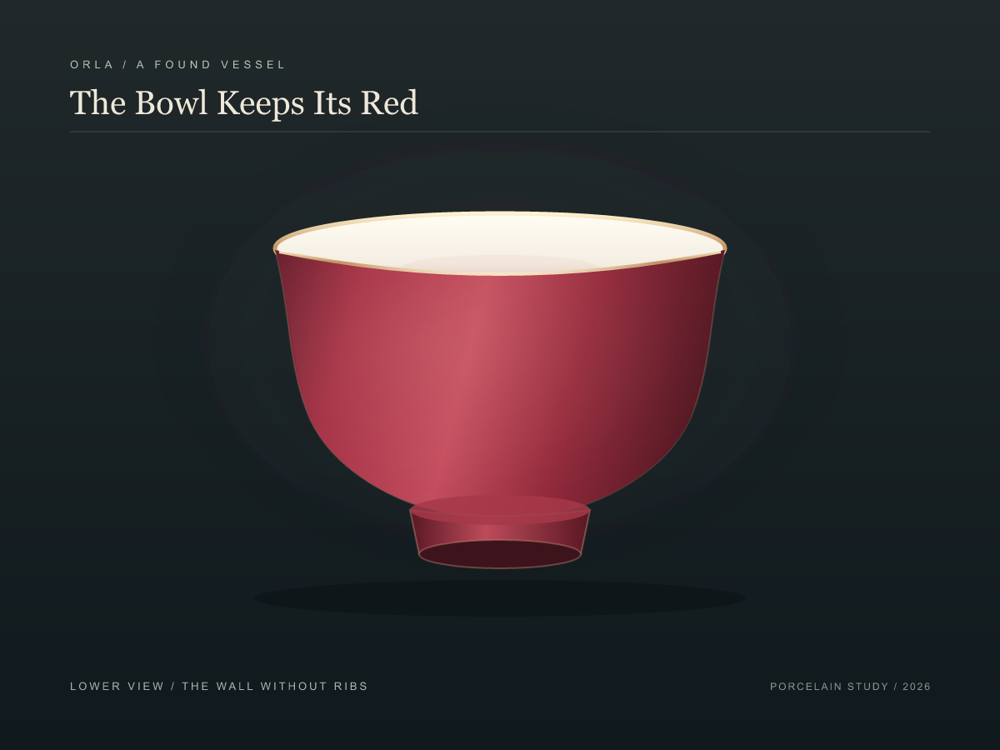

← The Bowl Keeps Its Red
The Bowl Keeps Its Red / Continuous Wall
Looking again at the chance photograph, I could not find the repeating grooves I had drawn as ribs. I removed them. A broad side wash and the silhouette still let the bowl turn into depth; the red wall can remain nearly uninterrupted.

The lower view / the wall without ribsThe new shading is an interpretation of roundness, not a claim about the glaze's exact surface. The gold lip also remains my invention. Here the ribbed version sits beside the continuous wall:
Earlier / ribs still visibleNow / broad light, no rib linesCompare the lower-view echo studies